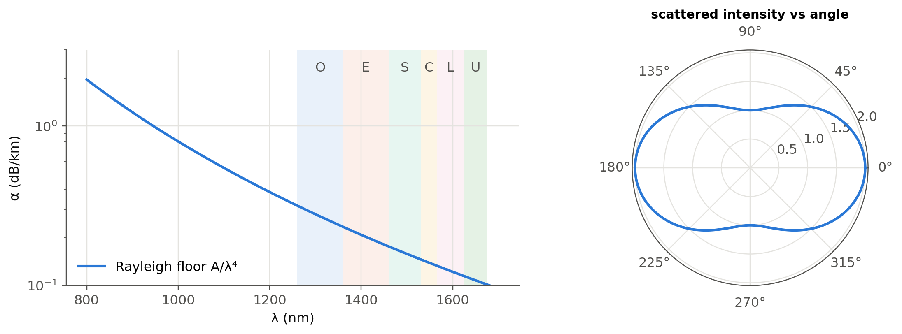
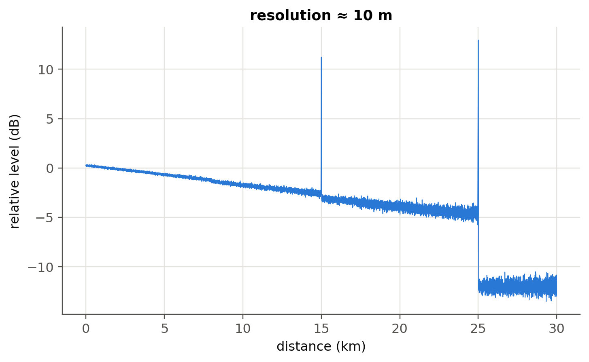
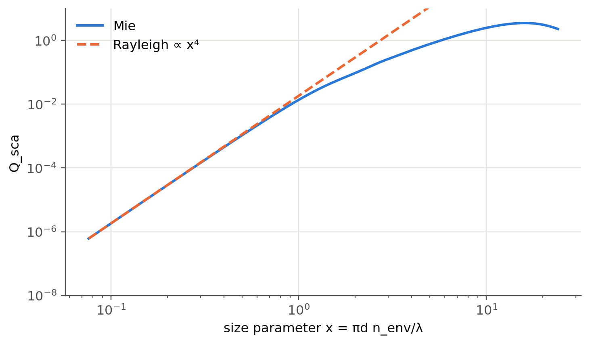

14 Scattering
 Run this chapter’s code in Google Colab (no installation).
Run this chapter’s code in Google Colab (no installation).
Slides 277–288: Rayleigh scattering (\(\propto\lambda^{-4}\)), attenuation, fiber loss mechanisms, optical time-domain reflectometry, spontaneous Raman scattering, spontaneous and stimulated Brillouin scattering. Chapter 2 develops the fiber side (loss spectrum, OTDR, distributed sensors) in detail.
14.1 Key relations
A particle much smaller than the wavelength is polarised by the field and re-radiates as an oscillating dipole, in “many” directions (slide 277). The scattered power grows as \(\lambda^{-4}\), and its angular pattern for unpolarised light is \(\propto1+\cos^2\theta\). A beam crossing a scattering medium is attenuated (slides 279–281):
\[ I=I_0e^{-\alpha_Rz},\qquad \alpha_R\propto\frac{1}{\lambda^4},\qquad \alpha_\text{dB}=\frac{10}{L}\log_{10}\frac{P_\text{in}}{P_\text{out}}=4.34\,\alpha . \]
| inelastic process | origin | shift in silica | use |
|---|---|---|---|
| Raman | molecular vibrations (optical phonons) | ≈ 13 THz (≈ 100 nm at 1550 nm) | distributed temperature sensing, Raman amplifiers |
| Brillouin | acoustic waves (acoustic phonons) | \(\nu_B=2nv_a/\lambda\approx11\) GHz | strain and temperature sensing; SBS limits launch power |
14.1.1 Why the sky is blue, live
14.2 Worked example: the Rayleigh floor of fiber loss (slides 279–281)
The Rayleigh contribution is \(\alpha_R=A/\lambda^4\). The coefficient \(A\) depends on the glass composition and fabrication; here \(A\approx0.8\) dB km⁻¹ µm⁴ is a representative value (Chapter 2 derives it from the glass properties).
Show the Python
A = 0.8
lam_um = np.linspace(0.8, 1.7, 400)
bands = {"O": (1260, 1360), "E": (1360, 1460), "S": (1460, 1530), "C": (1530, 1565), "L": (1565, 1625), "U": (1625, 1675)}
fig = plt.figure(figsize=(11, 3.8))
ax = fig.add_subplot(1, 2, 1)
ax.semilogy(lam_um*1e3, A/lam_um**4, label="Rayleigh floor A/λ⁴")
for k, (b, (l1, l2)) in enumerate(bands.items()):
ax.axvspan(l1, l2, alpha=0.1, color=ol.PALETTE[k % 8], lw=0); ax.text((l1 + l2)/2, 2.2, b, ha="center", color=ol.INK2)
ax.set(xlabel="λ (nm)", ylabel="α (dB/km)", ylim=(0.1, 3)); ax.legend()
axp = fig.add_subplot(1, 2, 2, projection="polar")
th = np.linspace(0, 2*np.pi, 400)
axp.plot(th, 1 + np.cos(th)**2); axp.set_title("scattered intensity vs angle", fontsize=10)
plt.tight_layout(); plt.show()
for l in (0.85, 1.31, 1.55):
print(f"{l*1e3:.0f} nm: α_R ≈ {A/l**4:.2f} dB/km")
850 nm: α_R ≈ 1.53 dB/km
1310 nm: α_R ≈ 0.27 dB/km
1550 nm: α_R ≈ 0.14 dB/kmAt long wavelengths, infrared absorption of Si–O bonds (the IR resonance of Chapter 4) takes over. The crossing of the two mechanisms places the loss minimum near 1550 nm.
14.3 Worked example: a toy OTDR trace (slides 282–283)
An OTDR launches a short pulse and records the Rayleigh backscatter versus time \(t\), that is distance \(z=v_gt/2\). The trace falls with slope \(2\alpha\) (round trip), displayed as \(\alpha\) in dB/km after the conventional 5·log₁₀ scaling. Splices appear as steps and connectors or fiber ends as Fresnel reflection peaks. Chapter 2 has a live OTDR simulator.
Show the Python
rng = np.random.default_rng(1)
Ng_f, tau = 1.468, 100e-9
dz = c0*tau/(2*Ng_f)
z = np.arange(0, 30e3, 2.0)
loss = 0.20/1e3*z + 0.15*(z > 8e3) + 0.5*(z > 15e3)
lin = np.where(z <= 25e3, 10**(-loss/10), 0.0)
for z0, hgt in {15e3: 14, 25e3: 18}.items():
lin += 10**((-np.interp(z0, z, loss) + hgt)/10)*np.exp(-((z - z0)/dz)**2)
lin += 10**(-12/10)
trace = 10*np.log10(lin) + 0.05*rng.standard_normal(z.size)*(1 + (z/10e3)**2)
fig, ax = plt.subplots(); ax.plot(z/1e3, trace, lw=0.7)
ax.set(xlabel="distance (km)", ylabel="relative level (dB)", title=f"resolution ≈ {dz:.0f} m"); plt.show()
14.4 Worked example: Raman and Brillouin shifts (slides 284–288)
Show the Python
dnu_R = 13.2e12
for lp in (1450, 1480):
print(f"Raman pump at {lp} nm -> Stokes peak at {c0/(c0/nm(lp) - dnu_R)*1e9:.0f} nm")
vA, n_f = 5960, 1.45
print(f"Brillouin shift at 1550 nm ≈ {2*n_f*vA/nm(1550)/1e9:.1f} GHz")
T = 298.15
print(f"Raman anti-Stokes/Stokes thermometer sensitivity at 25 °C: h·Δν/(k_B T²) = {ol.h*dnu_R/(1.380649e-23*T**2)*100:.2f} %/K (slide 286: ≈ 0.8 %/K)")Raman pump at 1450 nm -> Stokes peak at 1549 nm
Raman pump at 1480 nm -> Stokes peak at 1583 nm
Brillouin shift at 1550 nm ≈ 11.2 GHz
Raman anti-Stokes/Stokes thermometer sensitivity at 25 °C: h·Δν/(k_B T²) = 0.71 %/K (slide 286: ≈ 0.8 %/K)A 1450 nm pump therefore amplifies the C band: this is distributed Raman amplification, one of the optical amplifiers of Chapter 4. The Brillouin shift (≈ 11 GHz with bulk values; slightly lower in standard SMF because of the core doping) depends on temperature and strain, which is the basis of distributed Brillouin sensing.
14.5 Beyond the Rayleigh limit: Mie scattering (optional package)
Show the Python
try:
import miepython # pip install miepython (uses m = n − jκ, same convention as these notes)
d = np.logspace(-8, -5.5, 200)
qext, qsca, qback, g = miepython.efficiencies(1.5, d, nm(550), n_env=1.33)
x = np.pi*d*1.33/nm(550)
plt.loglog(x, qsca, label="Mie"); plt.loglog(x, qsca[0]*(x/x[0])**4, "--", label="Rayleigh ∝ x⁴")
plt.ylim(1e-8, 10); plt.xlabel("size parameter x = πd n_env/λ"); plt.ylabel("Q_sca"); plt.legend(); plt.show()
except Exception as err:
print("miepython not available here:", type(err).__name__)
TipGoing deeper
- Why is the sky blue but clouds white? Use the Mie cell to find where the \(\lambda^{-4}\) law breaks down (size parameter \(x\sim1\)).
- OTDR dynamic range versus resolution: shorter pulses improve resolution but lower the backscattered energy. How do photon-counting and coherent OTDRs (slide 283) get around this?
- Distributed acoustic sensing (DAS) with phase-sensitive OTDR turns telecom fibers into kilometre-long microphone arrays. How is the phase recovered?
- Stimulated Brillouin scattering threshold: estimate it for 20 km of SMF with \(P_{th}\approx21A_\text{eff}/(g_BL_\text{eff})\).
- Hollow-core fibers (NANF/DNANF) now reach losses comparable to or below solid-core fibers. Which scattering mechanism do they avoid?
NoteComplements
- G. P. Agrawal, Nonlinear Fiber Optics: chapters on stimulated Raman and Brillouin scattering.
- C. F. Bohren, D. R. Huffman, Absorption and Scattering of Light by Small Particles: Rayleigh and Mie theory.
- A. H. Hartog, An Introduction to Distributed Optical Fibre Sensors, CRC Press: OTDR, Raman (DTS) and Brillouin sensing.
14.6 Try it yourself
- By how much does Rayleigh loss drop when moving from 850 nm to 1550 nm? Express it in dB over 2 km.
- The Raman shift is fixed in frequency. What pump wavelength amplifies the L-band (1590 nm)?
- A Brillouin sensor measures a shift of +5.5 MHz. Is that 100 µε of strain or 5 K of heating? (Use the coefficients of Chapter 2.)